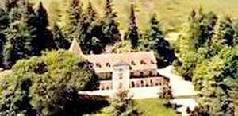
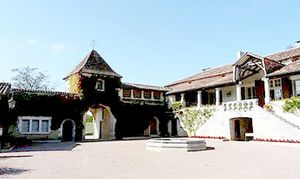
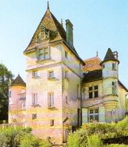
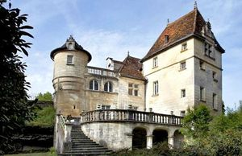
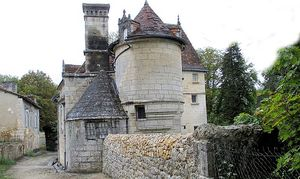
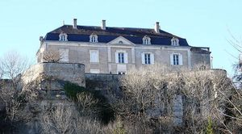
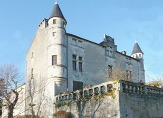
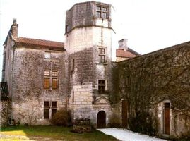
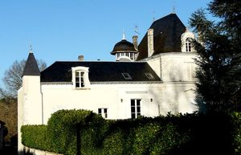

Recensement Jean-Claude Truffet
| Département | 24 — Dordogne |
| Canton | Brantôme |
| Commune | Brantôme |
| Type d'édifice | Château |
| Période d'origine | XV-XVI |
| Coordonnées GPS | 45° 21' 51" Nord ET 0° 38' 48" Est . Balangrav-1 chatenay grav-2. Hierce grav de 3 à 5 .Roches grav 6. Puymarteau GPS : 45° 21' 56" Nord et 0° 39' 34" Est grav 7-8 et des Thermes grav-9 |









A Brantôme , le château de Balan, de la Hièrce, de Puymarteau, de la Cote et de Roches des Thermes et du Chatenet pa d'informations historique pour ces trois derniers. BALANS, le château des Balans est l'ancien fief des Durand-Ruez. Cette demeure, aujourd'hui occupée par une maison de convalescence, évoque les Durand Ruel qui accumulèrent autrefois nombre de toiles impressionnistes
la HIERCE ou Castel de la Hierce du XVIe siècle, classé M.H.depuis 1892, Ce petit château Renaissance a été construit vers 1530 par les Flamenc de la Hierce. Actuellement il est la propriété des Dumoulin de la Plante. PUYMARTEAU, manoir du XVIe siècle a sans doute été construit par la famille des Chevalier, sur les bases d'un édifice plus ancien, habité alors par Jean Chevalier, damoiseau de Puymarteau en 1463. Cette famille restera propriétaire du domaine jusqu'à la fin du XVI siècle. De cette époque, au fil des siècles, ses différents propriétaires se chargèrent de lembellir, mais il conserve de nombreux éléments architecturaux dorigine.
ROCHES, THERMES, CHATENET des XVIIe et XVIIIe siècles, pas d'information historique mis à part châtenet aujourd'hui hôtel.
la COTE est un château bâti à Biras-Bourdeilles-Brantôme, Jean Marie du Lau d'Allemans, né le 30 octobre 1738 au château de la Côte à Biras, fut assassiné le 2 septembre 1792 à Paris, aux Carmes. Il devint archevêque dArles (du 1er octobre 1775 -1790). Il est considéré comme bienheureux et martyr par léglise catholique. Le château de la Côte a été reconverti en un superbe hôtel-restaurant 3 Etoiles.
BALANS, le château des Balans, situé sur la communede Brantôme, est l'ancien fief des Durand-Ruez. Cette demeure, aujourd'huioccupée par une maison de convalescence, évoque les Durand Ruel quiaccumulèrent autrefois nombre de toiles impressionnistes. Brantôme, "Venisedu Périgord", est située entre deux bras de la Dronne, ville-porte du ParcNaturel Régional Périgord-Limousin, est célèbre pour son patrimoinehistorique ; on peut admirer son abbaye édifiée du XIe siècle jusquau XIIIesiècle, l'ancienne tour du château abbatial, le pavillon Renaissance,
La HIERCE ce petit château Renaissance a été construit vers 1530 . Le corps de logis central se termine par une échauguette à l'ouest et prolongé à l'est par une loggia formant terrasse, bordée par une balustre. Celle-ci se termine par une tour circulaire, jouxtée au sud par un oratoire couvert de pierres plates. En saillie au milieu de la façade nord, se dresse une imposante tour carrée aux nombreuses ouvertures, abritant un escalier.
CHATENET est un manoir bâti à Brantome date du XVIIe et XVIIIe siècles. On accède du côté Ouest par un porche-pigeonnier qui ouvre sur une cour où se trouve un logis, côté Nord. A l'Est, un deuxième logis longe une galerie à arcades. Exploitant un vignoble, devenue, aujourd'hui, une hôtellerie de luxe.
PUYMARTEAU, avec son pigeonnier, XVIe et XVIIe siècles, inscrit en 1981, construit au XVIe siècle sur les bases dune ancienne maison forte du XIVe siècle, le château de Puymarteau, manoir du XVIe siècle.
Puymarteau famille des Chevalier La Cote Jean Marie du Lau d'Alleman
"
Plusieur château à Brantomme Brantome GPS : 45° 21' 51" Nord ET 0° 38' 48" Est . Balangrav-1 chatenay grav-2. Hierce grav de 3 à 5 .Roches grav 6. Puymarteau GPS : 45° 21' 56" Nord et 0° 39' 34" Est grav 7-8 et des Thermes grav-9